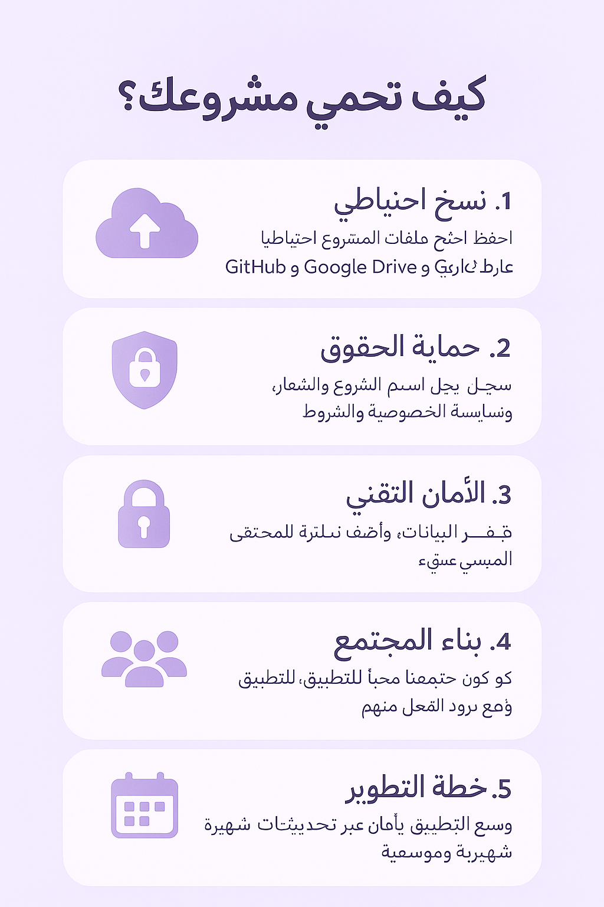
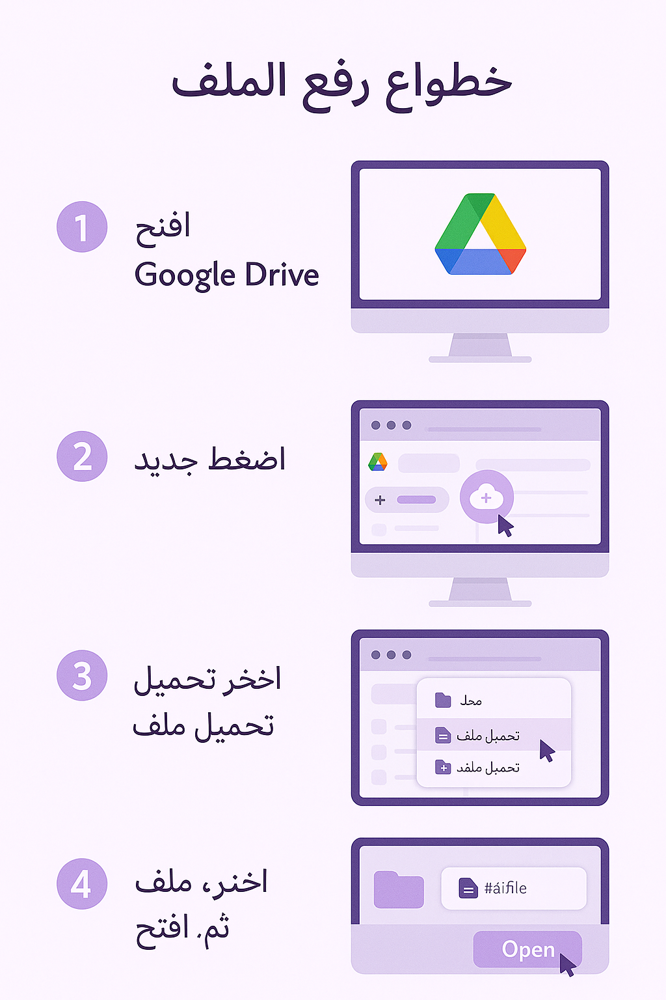
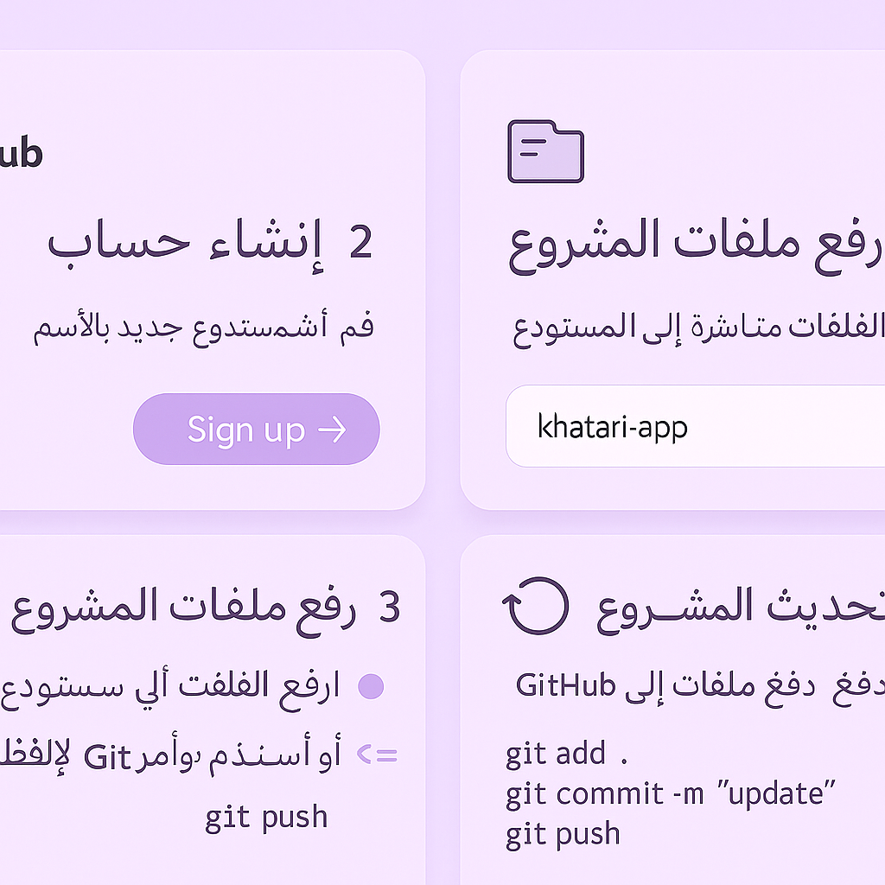
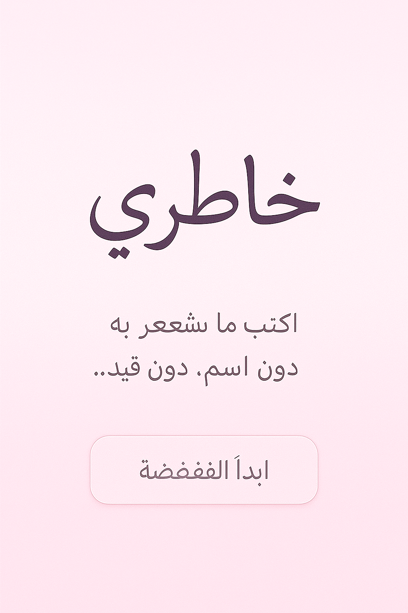

📘 دليل مصوّر: كيف تحمي مشروعك «خاطري» وكيف ترفعه وتنشره مجانًا
هذا الدليل يشرح لك بالخطوات والصور أبسط طريقة لحفظ تصميمك ورفعه ونشره للناس بسهولة من الجوال أو الكمبيوتر.
١) احفظ نسخة احتياطية + حماية المشروع
- احفظ ملفات التصميم في أكثر من مكان: قرص خارجي + Google Drive أو OneDrive.
- ضع ترخيصًا بسيطًا داخل مجلد المشروع (ملف LICENSE.txt) يوضح أن النشر مجاني الآن ولكن الاستخدام التجاري ممنوع إلا بإذن.
- أضف ملف README.md يشرح الفكرة وحقوقك ورابط صفحتك.

٢) رفع الملفات على Google Drive (أسهل للناس)
- افتح drive.google.com ثم سجّل الدخول.
- اضغط زر + جديد → تحميل ملف أو تحميل مجلد، ثم اختر ملفات التصميم.
- بعد الرفع، انقر بالزر الأيمن على الملف → الحصول على رابط → غيّر الصلاحية إلى أيّ شخص لديه الرابط → نسخ الرابط.
- شارك الرابط في بيو إنستغرام/تويتر/تيك توك أو على واتساب وتيليغرام.

٣) رفع المشروع على GitHub + نشر صفحة مجانية (GitHub Pages)
- أنشئ حسابًا في GitHub.
- أنشئ مستودعًا جديدًا باسم مناسب مثل khatari-app واجعله Public.
- ارفع الصور والملفات (سحب وإفلات في صفحة المستودع أو بأوامر git).
- لإنشاء موقع مجاني: من Settings → Pages اختر Deploy from a branch، والفرع main، والمجلد / (root)، ثم Save.
- سيظهر رابط موقعك مثل: https://username.github.io/khatari-app — شاركه مع الناس.

٤) شاشة الترحيب التي صمّمناها (عيّنة للعرض)
يمكنك استخدام هذه الصورة في صفحة GitHub Pages أو كصورة غلاف على المتاجر وصفحات التواصل.

٥) كيف تربح لاحقًا مع بقاء التحميل مجانيًا
- أضف زر دعم مثل BuyMeACoffee أو Ko‑fi في صفحتك.
- قدّم نسخة مدفوعة بميزات إضافية (ملفات Figma قابلة للتعديل، حِزم ألوان إضافية، خطوط خاصة).
- اعرض خدمات مصغّرة: تخصيص شعار «خاطري» باسم المستخدم، أو صفحات إضافية.
- إن تحوّل لموبايل آب: أضف اشتراكًا رمزيًا أو مزايا Pro (ثيمات إضافية/نسخ احتياطية مشفّرة).